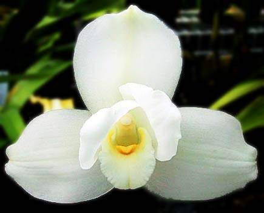
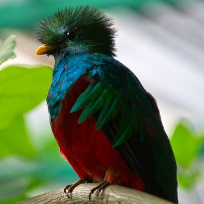
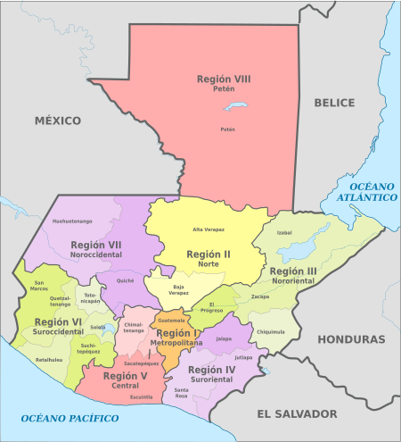
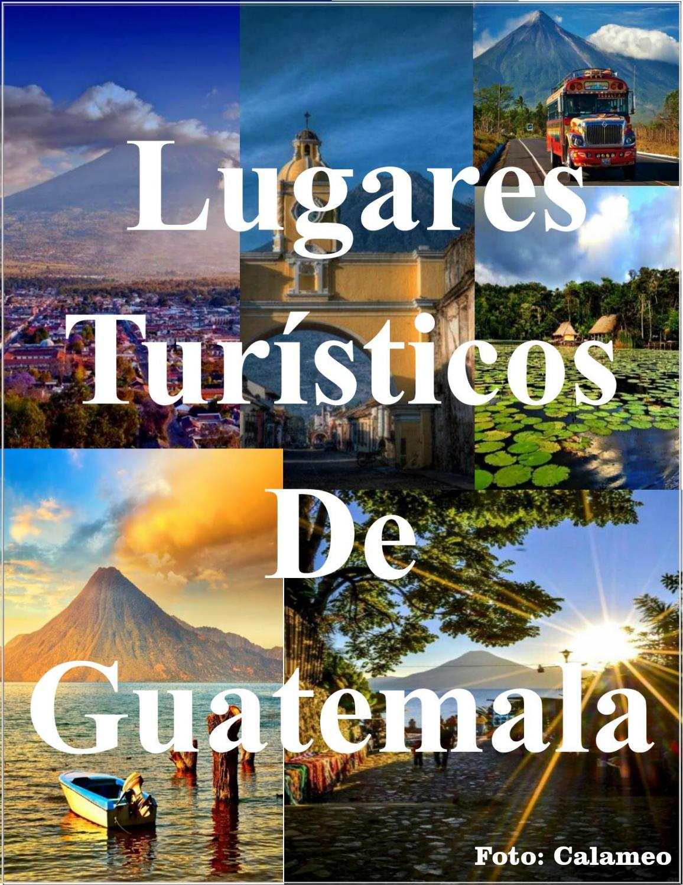
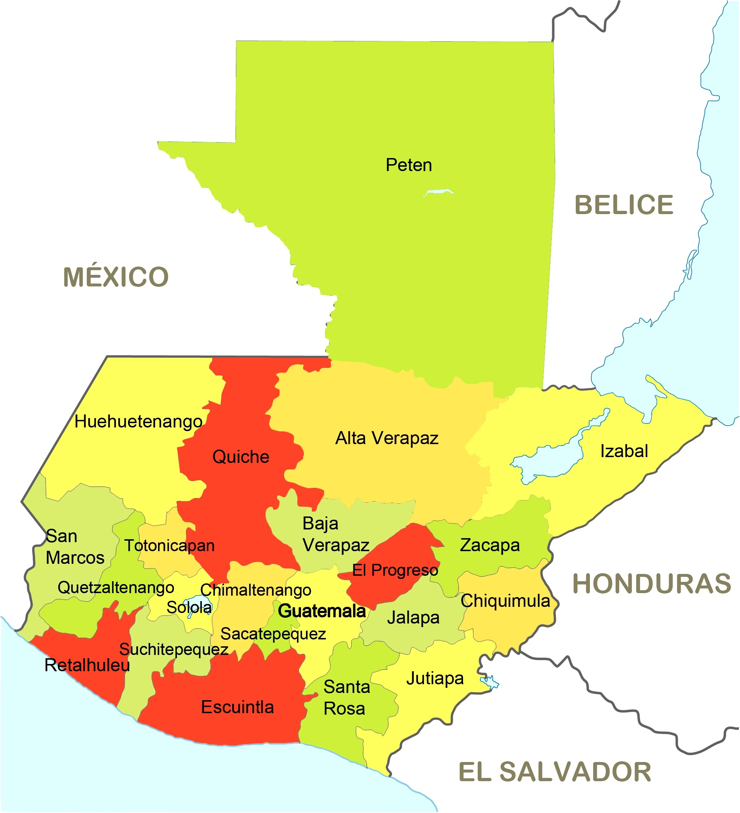

Simbolos patrios

Bandera
La franja blanca entre las dos celestes representa el hecho de que el país se encuentra entre el océano Pacífico al sur y el mar Caribe al noroeste. En el centro aparece el Escudo Nacional.
El blanco representa pureza, integridad, fe, obediencia, firmeza, vigilancia, paz y nación. El azul simboliza justicia, lealtad, dulzura, fortaleza, cielo guatemalteco y los dos mares citados que bañan las costas del país, al igual que las de Centroamérica.

Escudo
Dos espadas desenvainadas de oro cruzadas, como símbolo de justicia y soberanía.
Las armas están enlazados con ramas de laurel, símbolo de victoria.
El centro está cubierto con un pergamino, que contiene la leyenda en letras de oro Libertad 15 de septiembre de 1821.
En la parte superior del pergamino figura un quetzal, el ave nacional de Guatemala. Este sirve como símbolo de libertad, independencia y autonomía de la nación.
Finalmente, todo lo anterior se presenta sobre un fondo celeste claro.

Flor nacional
En 1933 el botánico Ulises Rojas propuso que la Monja Blanca fuera Símbolo Nacional durante la exposición internacional de flores de Miami Beach, Florida, por lo que el 11 de febrero de 1934 el Presidente Jorge Ubico emitió un decreto para otorgar a esta orquídea el título de Flor Nacional.

Árbol nacional
Es conocida por su nombre científico Ceiba Pentandra, fue establecida como Árbol Nacional el 8 de marzo de 1955 durante el gobierno del presidente de Guatemala Carlos Castillo Armas.
La solicitud de la iniciativa fue hecha por el botánico Ulises Rojas.
La fronda de la Ceiba puede tener hasta 1600 metros cuadrados, además es reconocida por su hermoso follaje y excelentes propiedades medicinales.

Animal nacional
Este era considerado por las civilizaciones precolombinas de Mesoamérica como un ave divina asociada a Quetzalcóatl, la “serpiente emplumada”.
Los antiguos mexicas y mayas vieron al quetzal como el “dios del aire” y como un símbolo de la bondad y la luz, sus plumas de cola verde fueron veneradas como símbolos para el crecimiento de las plantas en la primav
Historia
Santiago de Guatemala, la primera capital, fue fundada en 1527. En 1542, el país formó la capitanería general de Guatemala, bajo la dependencia del virrey de México.
El país proclamó su independencia el 15 de septiembre de 1821, para ser inmediatamente integrado al imperio mexicano de Iturbide.

Extención territorial
108.889 km²

Lugares turisticos de Guatemala
- Antigua Guatemala
- Semuc Champey
- Ciudad de Guatemala
- Zona Arqueológica Tikal
- Lago de Atitlán
Lista de departamentos
